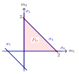

Example 12.1.5. We continue with the surface in example 12.1.4 with $X=\mathrm{Bl}_0\mathbb {P}^2$. Let $\pi \colon X\rightarrow \mathbb {P}^2$ be the blow-up morphism, and write
\[ H=D_{\sigma _4},\quad E=D_{\sigma _7}. \]
Consider the toric Cartier divisor
\[ D=2D_{\sigma _4}+D_{\sigma _7}=2H+E. \]
This gives a simple example of a big toric divisor which is not nef.
Indeed, the intersection numbers on $X$ are
\[ H^2=1,\quad H\cdot E=0,\quad E^2=-1. \]
Hence
\[ D\cdot E=(2H+E)\cdot E=-1<0, \]
so $D$ is not nef.
The inequalities defining $P_ D$ are
\[ m_1\geq 0,\quad m_2\geq 0,\quad m_1+m_2\leq 2,\quad m_1+m_2\geq -1. \]
The last inequality, corresponding to the exceptional ray $\sigma _7$, is redundant. This is a typical phenomenon in the non-ample situation. Thus
\[ P_ D=\{ m=(m_1,m_2)\in M_{\mathbb {R}}:m_1\geq 0,\ m_2\geq 0,\ m_1+m_2\leq 2\} , \]
as illustrated in 12.4.
